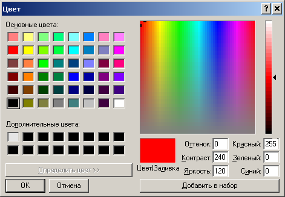

Проектировщик тротуарной плитки 2.2
Собственные цвета
По умолчанию в проекте доступны только стандарные цвета и один дополнительный цвет, серый, для
нецветных плиток.
Как видите, здесь практически нет цветов, которые можно использовать для плиток. Но можно нажать кнопку "Определить цвета" и создать свои собственные цвета.
Нас будут интересовать значения "Красный", "Зелёный" и "Синий". Величина может варьироваться от 0 до 255.
Создаём свой цвет. В списке "Дополнительные цвета" выбираем свободную ячейку.
Важно! Надо предварительно нажать мышкой где-нибудь в цветовом поле - просто ввод значений в поля цветов не будет изменять цвет. Такой глюк наблюдается по крайней мере в Windows XP.
Вводим в "Красный" значение "206", в "Зелёный" - "132", в "Синий" - "103". Нажимаем "Добавить в набор".
Повторяем то же самое ещё раз:
Повторяем ещё два раза. Первый набор чисел для цветов - "139", "104" и "82". Второй набор - "99", "72" и "50". В итоге получаем такой набор цветов:
Эти цвета существуют, пока открыто окно, в котором вызывался диалог "Цвет". Чтобы сохранить их для дальнейшего использования, надо их сохранить. Для этого в главном меню вызывающего окна надо воспользоваться пунктом меню "Сохранить цвета". В редакторе проектов он находится в меню "Участок", в редакторе узоров - в "Чертёж". Цвета сохраняются в файл.
Там же находится пункт "Загрузить цвета". Как следует из названия, через него можно загрузить цвета из файла в диалог "Цвет".
Как видите, здесь практически нет цветов, которые можно использовать для плиток. Но можно нажать кнопку "Определить цвета" и создать свои собственные цвета.
Нас будут интересовать значения "Красный", "Зелёный" и "Синий". Величина может варьироваться от 0 до 255.
|  Красный |
Зелёный |
Синий |
Какой-то песочный цвет |
Создаём свой цвет. В списке "Дополнительные цвета" выбираем свободную ячейку.
Важно! Надо предварительно нажать мышкой где-нибудь в цветовом поле - просто ввод значений в поля цветов не будет изменять цвет. Такой глюк наблюдается по крайней мере в Windows XP.
Вводим в "Красный" значение "206", в "Зелёный" - "132", в "Синий" - "103". Нажимаем "Добавить в набор".
Повторяем то же самое ещё раз:
- В списке "Дополнительные цвета" выбираем свободную ячейку
- Нажимаем мышкой где-нибудь в цветовом поле
- Вводим в "Красный" значение "234", в "Зелёный" - "156", в "Синий" - "117"
- Нажимаем "Добавить в набор"
Повторяем ещё два раза. Первый набор чисел для цветов - "139", "104" и "82". Второй набор - "99", "72" и "50". В итоге получаем такой набор цветов:
Эти цвета существуют, пока открыто окно, в котором вызывался диалог "Цвет". Чтобы сохранить их для дальнейшего использования, надо их сохранить. Для этого в главном меню вызывающего окна надо воспользоваться пунктом меню "Сохранить цвета". В редакторе проектов он находится в меню "Участок", в редакторе узоров - в "Чертёж". Цвета сохраняются в файл.
Там же находится пункт "Загрузить цвета". Как следует из названия, через него можно загрузить цвета из файла в диалог "Цвет".